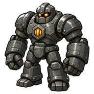
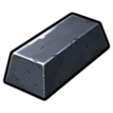
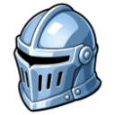

Iron Golem
Level 58 · 🕳️ Deepstone Mines
| Property | Value |
|---|---|
| Weakness | ⚔️ Melee |
| Hitpoints | 165 |
| Attack | 50 |
| Strength | 42 |
| Defence | 35 (+55 armour) |
| XP per kill | 720 |
| Slayer | ⛏️ Forewoman Brack gives tasks here (Slayer 30, combat 50) |
Drops
| Item | Amount | Chance |
|---|---|---|
| 250–600 | Always | |
 Iron Bar | 2–4 | 70% |
 Steel Helm | 1 | 1 in 33 |
Needed for
- Diary: Deepstone Diary